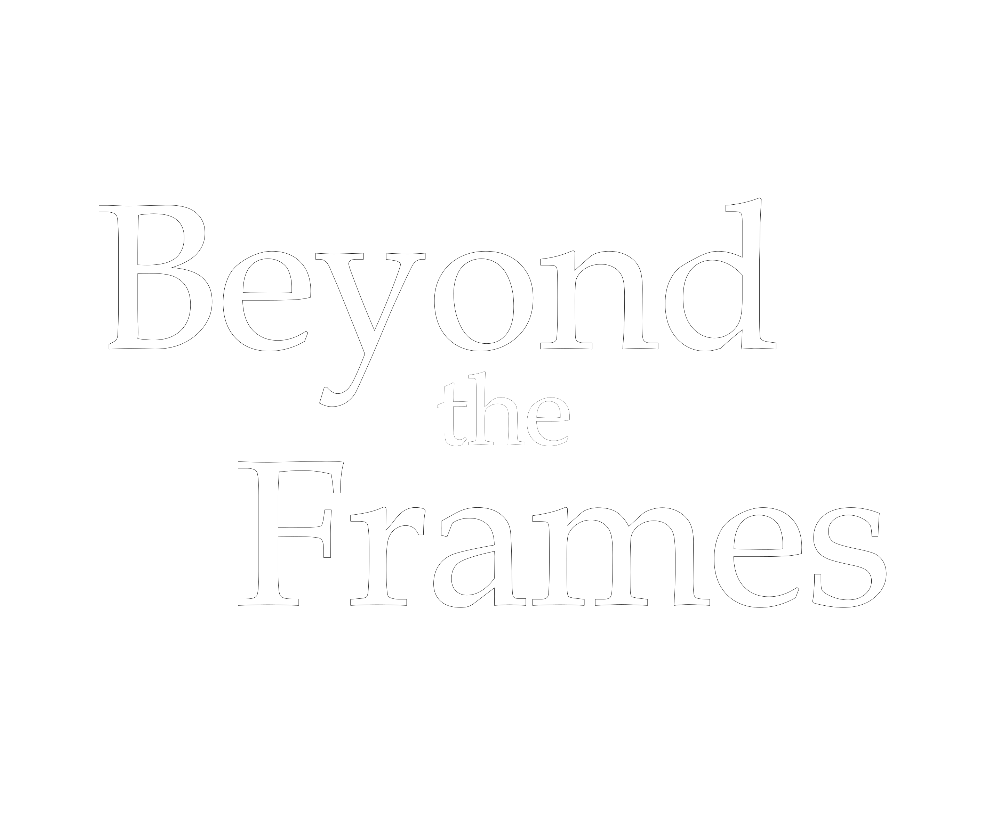
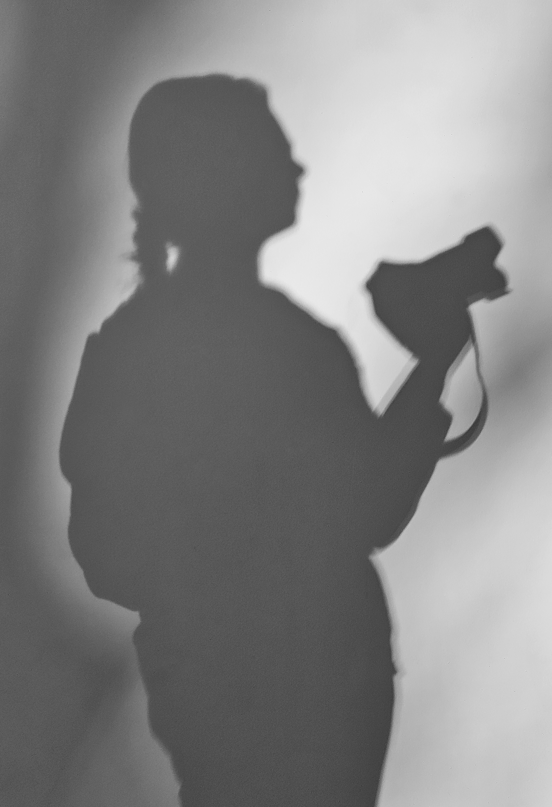
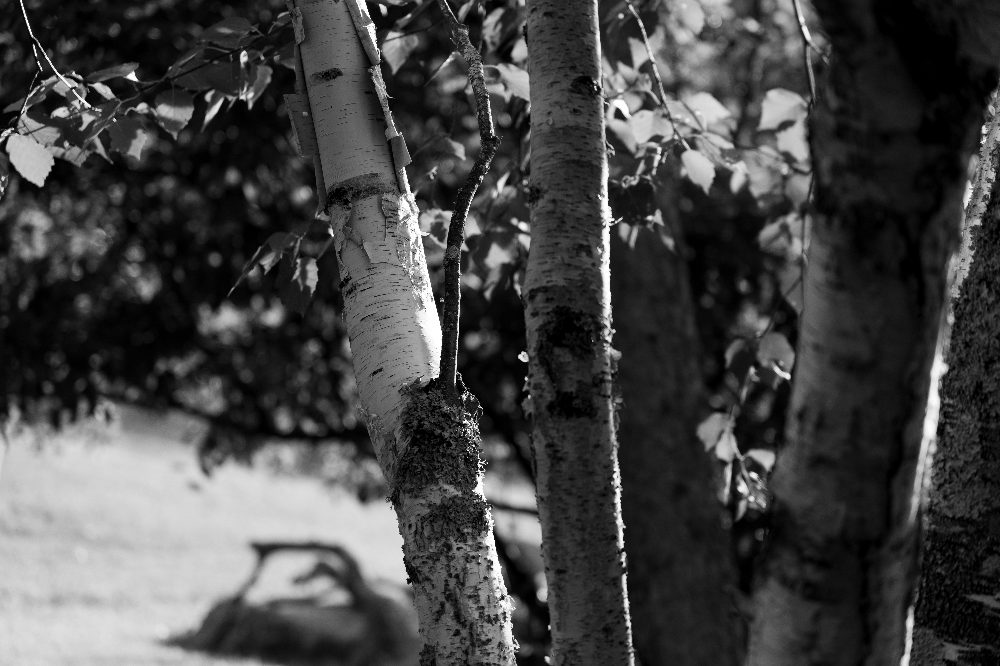

Welcome
to
Greetings,
If you're looking for authentic media, you've come to the right place. I'm a technical creative striving to communicate the reality in front of my camera in a visually engaging way. I specialize in photography and videography, with a focus on live events.
Looking to capture the life of something? You can contact me at beyondtheframes32@gmail.com.
I look forward to hearing from you!

